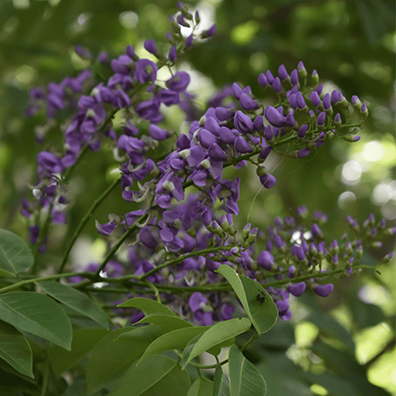
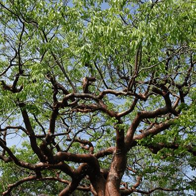
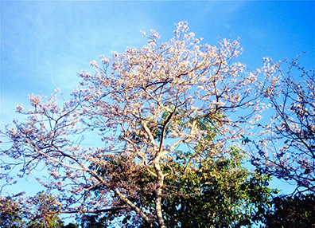
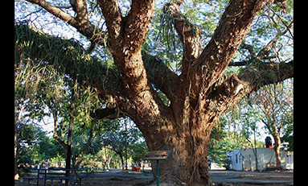

La Península de Yucatán alberga una flora extraordinaria, compuesta por más de 2,300 especies de plantas, de las cuales el 5% son endémicas, es decir, únicas de esta región. Estas plantas no solo son esenciales para el equilibrio ecológico, sino que también tienen un gran valor cultural y económico para las comunidades locales.
5 Plantas Endémicas De YúcatanBálche El "balché" se refiere a una bebida alcohólica tradicional mexicana, particularmente de la cultura maya de la península de Yucatán, así como a un árbol del que se obtiene la corteza para preparar esta bebida. El árbol balché (Lonchocarpus longistylus) es considerado sagrado por los mayas, y la bebida, llamada "balché", se utiliza en rituales religiosos y ceremoniales. Chaká El palo mulato es un árbol de hasta 35 m de alto, resinoso y aromático, tronco torcido, corteza rojiza o verdosa, desprendible en capas papiráceas. Hojas de 18 a 40 cm, con 7 a 13 foliolos de 5 a 9 cm de largo y 2 a 4 cm de ancho, imparipinnados, foliolos oblongos asimétricos, acuminados en el ápice. Flores masculinas y femeninas similares en racimos, crema o blanco verdosas. Fruto globoso, trivalvado, café rojizo, brotan en grupos. Su fruto es una cápsula trivalvada con el exocarpio dehiscente de 10 a 15 mm de largo, triangular, moreno rojiza, dehiscente. Una sola semilla por fruto dispersados por pájaros y mamíferos roedores. Jabín árbol que alcanza hasta 20 m. de altura, caducifolio, copa densa, corteza fisurada, hojas ovadas compuestas imparipinnadas, foliolos elípticos verde oscuros, flores en panículas ligeramente perfumadas, pétalos rosados o ligeramente morados florea de febrero a mayo, frutos en forma de vaina con alas de color café y alargados quebradizos al madurar. Pich árbol grande y llamativo, caducifolio, de 20 a 30 m. de altura, follaje abundante, hojas bipinnadas los foliolos se pliegan en la noche, ramas ascendentes, corteza lisa a granulosa gris clara con abundantes lenticelas alargadas; flores en pequeñas cabezuelas pedunculadas actinomórficas, caliz verde y tubular, corola verde clara, florece de marzo a mayo; el fruto es una vaina circular indehiscente de 7 a 15 cm. aplanada y enroscada leñosa, moreno oscura, brillante, de sabor dulce, contiene de 10 a 20 semillas; semillas grandes ovoides y aplanadas de color moreno, brillantes con una linea pálida con la forma del contorno de la semilla, testa muy dura. Makulis Rosa árbol de hasta 15 mts. de altura, el tronco es recto y fisurado y la copa piramidal; las flores son de color rosa-morado, muy vistosas, dispuestas al final de las ramas; los frutos son cápsulas de 30 a 40 cms. de largo, ligeramente retorcidos. Regresar Derechos Reservados ©2025 Abraham Israel Baeza Chalé |